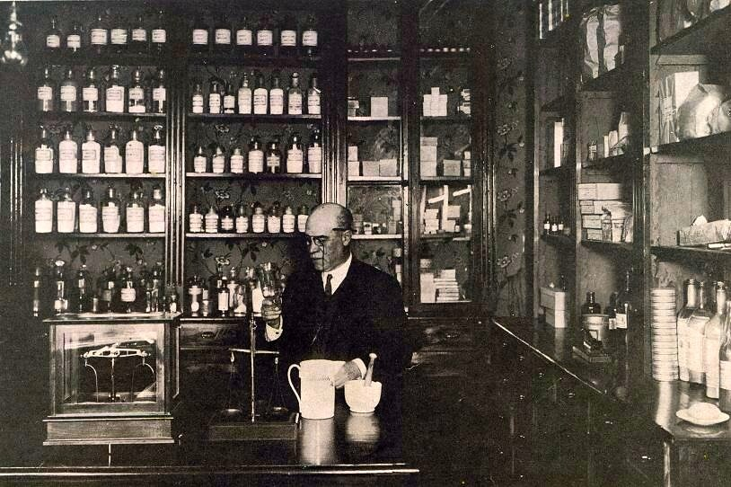
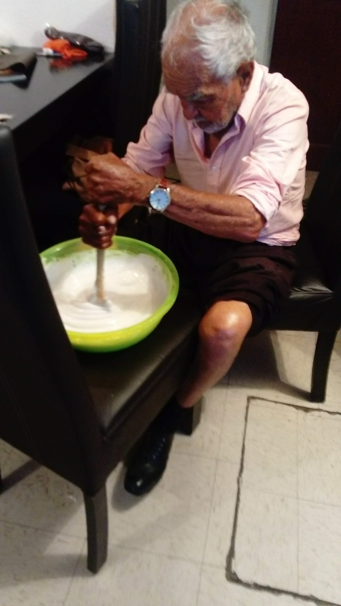
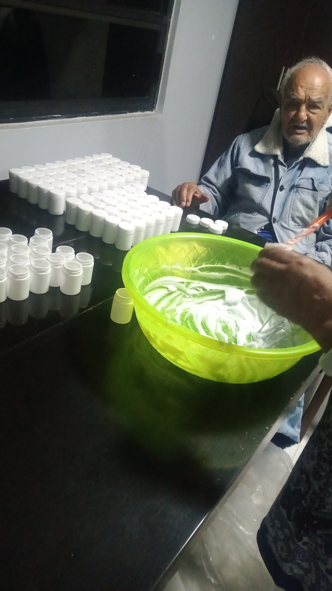
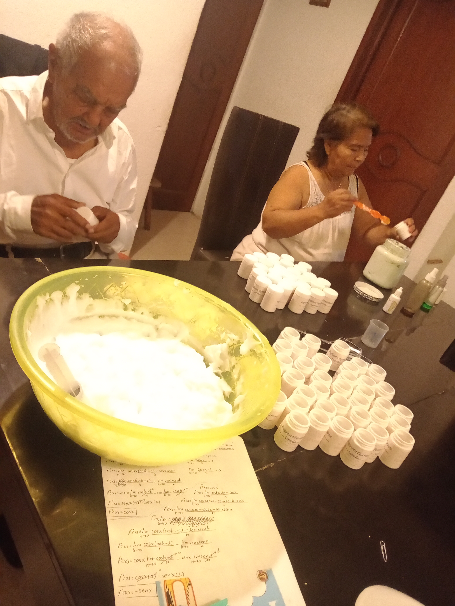

La Historia de Edmundo Méndez y el Ungüento Cipriano Loredo
Cuando Edmundo Méndez era apenas un niño en el pintoresco pueblo de Huatusco, Veracruz, sus días transcurrían entre los olores a hierbas medicinales y el sonido de las campanas en la botica familiar. Su padre, un boticario de la vieja escuela, había pasado años preparando remedios tradicionales que la comunidad venía a buscar con confianza y esperanza. Entre todos los secretos que Edmundo aprendería en esos primeros años, había uno que marcaría el resto de su vida: la receta del Ungüento Cipriano Loredo.
Aprendiendo desde la niñez
Apenas alcanzaba el mostrador, pero Edmundo observaba con ojos atentos cómo su padre combinaba cuidadosamente plantas, aceites y esencias, creando ese ungüento especial que tenía el poder de aliviar dolores que parecían imposibles de calmar. Con manos pequeñas pero dedicadas, ayudaba a medir los ingredientes, revolver la mezcla con paciencia y empaquetar cada frasco como si fuera un pequeño tesoro.
La botica se convirtió en su escuela de vida. Edmundo aprendió no solo el valor de la precisión en cada preparación, sino también la importancia de escuchar a los clientes, muchos de los cuales compartían historias de dolor y alivio. A temprana edad, entendió que su trabajo no solo consistía en mezclar ingredientes, sino en llevar esperanza a quienes llegaban buscando alivio.
El legado de Cipriano Loredo
El Ungüento Cipriano Loredo tenía una historia propia. Su receta se había transmitido a lo largo de generaciones, creada originalmente por un curandero local que había encontrado en las plantas de la región una fórmula poderosa para calmar dolores musculares, inflamaciones y heridas superficiales. La familia Méndez se había comprometido a preservar esa tradición y Edmundo lo sabía. Cada vez que preparaba el ungüento, sentía que estaba contribuyendo a algo más grande que él, algo que trascendía generaciones.
El sueño se hace grande
 
Con el tiempo, Edmundo asumió la responsabilidad de la botica y del ungüento. Pero no se detuvo allí. Recordando las enseñanzas de su padre, decidió llevar el Ungüento Cipriano Loredo más allá de las fronteras de Huatusco. Con esfuerzo y visión, comenzó a distribuir el producto en mercados más grandes, llegando poco a poco a tiendas locales en otros municipios y, finalmente, a las principales ciudades del país.
Hoy, el Ungüento Cipriano Loredo se distribuye en todo México, reconocido por su eficacia y calidad, con más de 10 años en el mercado minorista. Pero para Edmundo, el éxito no se mide solo en ventas. Cada frasco que llega a una nueva familia es un recordatorio de los humildes comienzos en la pequeña botica de Huatusco, donde aprendió de su padre que el verdadero poder de un remedio no está solo en los ingredientes, sino en el amor y la dedicación con que se prepara.
Un legado que continúa
Ahora, Edmundo comparte la historia del ungüento no solo como un producto, sino como un legado familiar. Lo que empezó como una receta casera en una pequeña botica veracruzana ha logrado tocar la vida de miles de personas. Y cada vez que Edmundo visita Huatusco y pasa por el antiguo local de la botica, siente el mismo orgullo y emoción que cuando era niño, sabiendo que el trabajo que empezó allí sigue sanando y aliviando a generaciones de familias.
